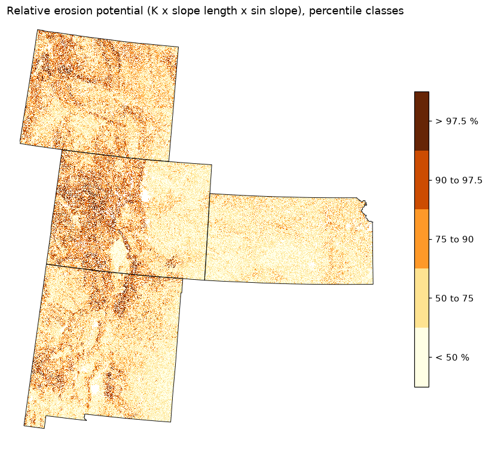
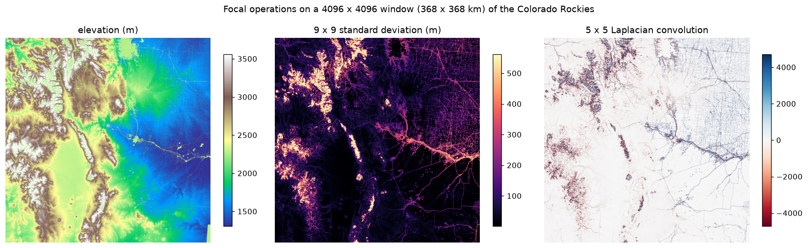
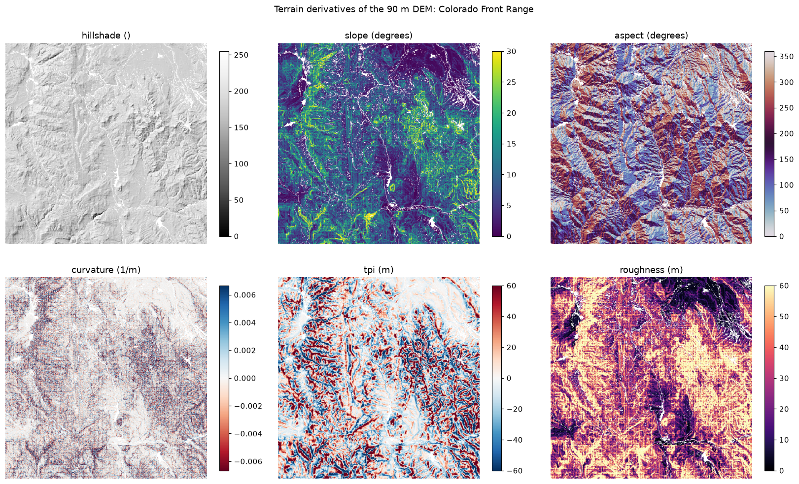
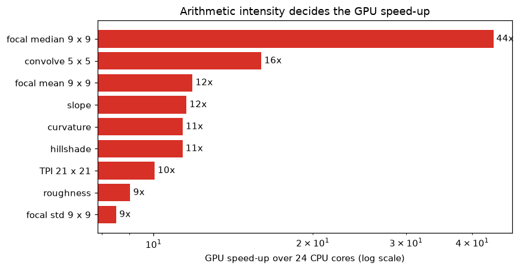
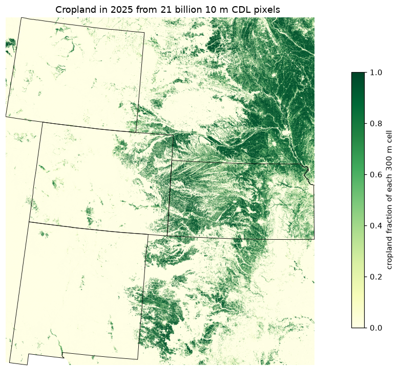

Map Algebra, Focal Operations and Terrain on Chunked and GPU Rasters
Raster analysis is built from three kinds of operation: local (each output pixel from the same pixel of one or more inputs), focal (from a moving window around it) and zonal (from all pixels of a region, notebook 05). This notebook runs the first two at scale with geolattice.distributed.raster: map algebra on the 15 Great Plains covariates, moving-window statistics and convolutions, and the standard terrain derivatives of the 262 million pixel DEM, on all CPU cores and on the GPU. It checks that chunked results equal whole-array results at chunk edges, measures which operations gain most from a GPU, and ends by processing every pixel of the 152 billion pixel 10 m Cropland Data Layer without ever holding more than a few chunks in memory.
Overview
Local, focal and zonal
Kind
Output pixel depends on
Examples
Parallel pattern
Local
the same pixel of each input
arithmetic, NDVI, reclassification, masks
any chunking; no communication
Focal
a window of k x k pixels around it
moving mean or median, convolution, slope, curvature
chunks plus a halo of k // 2 pixels
Zonal
every pixel of its zone
mean NDVI by county
partial sums per chunk, combined at the end
Global
possibly every pixel
flow accumulation, cost distance, viewshed
hard to chunk (notebook 08)
Edges
A moving window at the edge of the raster reaches outside it. GeoLattice repeats the nearest edge value there (mode="nearest"), the same rule SciPy uses, so a chunked result and a whole-array result agree everywhere, including the raster border. NaN propagates: any window containing a NaN gives NaN for means and convolutions, so fill gaps first if that matters.
Arithmetic intensity
What a GPU or more cores can gain depends on how much arithmetic an operation does per byte it reads. Slope does a few operations per pixel and is limited by memory bandwidth; a 9 x 9 median sorts 81 values per pixel and is limited by arithmetic. Reading a compressed file is limited by decompression on the CPU. The timings below show all three regimes.
Terrain derivatives
GeoLattice computes them from the 3 x 3 neighbourhood with Horn’s (1981) finite differences:
Function
Quantity
Units
slope
steepest gradient
degrees, radians or percent
aspect
direction of steepest descent, clockwise from north
degrees
hillshade
illumination from a light source (azimuth 315, altitude 45 by default)
0 to 255
curvature
Laplacian (total) curvature: negative on ridges, positive in hollows
1/m
tpi
elevation minus the mean of a window x window neighbourhood
m
tri
terrain ruggedness index (Riley et al. 1999)
m
roughness
largest minus smallest elevation in the 3 x 3 window
m
Raster Processing with GeoLattice
Function
Kind
Notes
pdist.raster.calc(expr, **layers)
local
an expression string or a function of named layers
where(cond, a, b), normalize, normalized_difference
local
a, b may be scalars
reclassify(bins=, values=) or reclassify(mapping=)
local
classes from intervals or exact values; output float32
map_tiles(obj, func, overlap=)
local or focal
any func(block, xp) written with xp runs on NumPy and CuPy
Every function takes compute= and chunks=, keeps the input’s type, laziness and memory space, and adds the halo its window needs.
Learning objectives
Classify raster operations as local, focal, zonal or global and choose the parallel pattern.
Write map algebra over several large rasters with calc, where and reclassify.
Run focal statistics and convolutions and confirm that chunked results equal whole-array results at chunk edges.
Compute terrain derivatives of a 262 million pixel DEM and compare them with published layers.
Measure CPU and GPU times and explain them with arithmetic intensity.
Process the 152 billion pixel CDL out of core with a lookup-table reclassification, and aggregate it to a coarser grid.
Data
Dataset
Content
Great Plains covariates
90 m, 17,196 x 15,245 pixels, EPSG:5070: elevation, slope, slope length, K factor and others
2025 CONUS CDL
10 m, 316,295 x 480,509 pixels (152 billion), uint8 crop codes, 15 GB, EPSG:5070
Contents
Setup
Map algebra on the covariates
Focal statistics and convolution
Terrain derivatives of the Great Plains
CPU and GPU, operation by operation
Every pixel of the 10 m CDL, out of core
From 10 m crop codes to a 300 m crop fraction
Summary and exercises
Setup
Code
import warnings # warning controlwarnings.filterwarnings("ignore") # hide routine library warningsimport os # environment and CPU countimport time # wall-clock timingfrom pathlib import Path # file pathsimport matplotlib.pyplot as plt # figuresimport numpy as np # arraysimport pandas as pd # tablesimport geopandas as gpd # vector dataimport xarray as xr # labelled rastersimport geolattice # GeoLatticeimport geolattice.distributed as pdist # distributed and GPU spatial computingimport dist_data as dd # chapter helper: paths, cached downloads, timersplt.rcParams.update({"figure.dpi": 110}) # figure resolutionpd.set_option("display.width", 140) # wider printed tablesOUT = Path("outputs") # results and scratch files written by this chapterOUT.mkdir(exist_ok=True) # create it if neededcaps = pdist.capabilities() # engines and GPUs on this machineprint("GeoLattice", geolattice.__version__, "|", os.cpu_count(), "CPU cores |", caps["gpus"], "GPU(s)", # versionsf"({caps.get('gpu_memory_total', 0) /1e9:.0f} GB)"if caps["gpus"] else"") # GPU memoryimport dask # Dask configurationimport dask.array as da # chunked arraysimport scipy.ndimage as ndi # whole-array filters for checksdef sync(): # wait for queued GPU work so timings are realif caps["gpus"]: # only with a GPUimport cupy as cp # GPU arrays cp.cuda.Device().synchronize() # block until donedef best_of(fn, n=2): # best wall time of n runs after a warm-up run fn(); sync() # warm-up times = [] # timingsfor _ inrange(n): # timed runs t = time.perf_counter(); fn(); sync(); times.append(time.perf_counter() - t) # one runreturnmin(times) # best
pdist.raster.calc evaluates an expression over named layers. As an example, a relative erosion potential combines soil erodibility (K factor), slope length and the sine of the slope, the three terrain and soil terms of the Universal Soil Loss Equation (without rainfall and cover). The layers stay lazy, so nothing is read until the result is used.
Code
lay = {n: dd.gp_raster(n) for n in ["kfactor", "slopeleng", "slope"]} # three lazy covariateserosion = pdist.raster.calc("kfactor * sqrt(slopeleng) * sin(slope * pi / 180)", **lay) # expression over layersprint("lazy:", pdist.is_lazy(erosion), "| chunks:", erosion.data.npartitions, "| dtype:", erosion.dtype) # still a recipeq = np.nanpercentile(erosion[::10, ::10].values, [50, 75, 90, 97.5]) # class breaks from every 100th pixelprint("class breaks (median, 75th, 90th, 97.5th percentile):", np.round(q, 4)) # breaksclasses = pdist.raster.reclassify(erosion, bins=list(q), values=[1, 2, 3, 4, 5]) # five classessteep = pdist.raster.where(lay["slope"] >15, classes, 0) # keep classes only on slopes above 15 degreeswith dd.timer("erosion potential, five classes and the steep-land mask for 262 million pixels"): # run the chain cls_small, steep_share = dask.compute(classes[::10, ::10], (steep >0).mean()) # a preview and one statisticprint(f"share of the Great Plains rectangle that is steep (above 15 degrees): {float(steep_share):.2%}") # result
lazy: True | chunks: 72 | dtype: float32
class breaks (median, 75th, 90th, 97.5th percentile): [0.0013 0.0242 0.118 0.4143]
erosion potential, five classes and the steep-land mask for 262 million pixels: 2.78 s
share of the Great Plains rectangle that is steep (above 15 degrees): 4.39%
Code
fig, ax = plt.subplots(figsize=(7.5, 7)) # one mapcm = plt.get_cmap("YlOrBr", 5) # five coloursim = ax.imshow(cls_small, cmap=cm, vmin=0.5, vmax=5.5, extent=dd.extent(cls_small), interpolation="nearest") # classescb = plt.colorbar(im, ax=ax, shrink=0.7, ticks=[1, 2, 3, 4, 5]); cb.ax.set_yticklabels(["< 50 %", "50 to 75", "75 to 90", "90 to 97.5", "> 97.5 %"]) # legenddd.gp_states().boundary.plot(ax=ax, color="k", lw=0.6) # statesax.set_title("Relative erosion potential (K x slope length x sin slope), percentile classes"); ax.set_axis_off() # titleplt.tight_layout(); plt.show() # draw

The highest classes follow the Rocky Mountain front and the dissected terrain of Wyoming and New Mexico, where steep slopes meet long slope lengths; most of Kansas falls in the lowest classes. The whole chain (three reads, an expression, a reclassification, a mask and two reductions) ran as one task graph in a few seconds.
Focal statistics and convolution
pdist.raster.focal computes moving-window statistics with the halo each window size needs. The check below compares the chunked 9 x 9 median, standard deviation and a custom 5 x 5 convolution with SciPy on the whole window at once, including the pixels along chunk seams.
Code
w = dd.gp_raster("elev")[7000:11096, 3000:7096].compute() # 4096 x 4096 window in the Colorado mountainsw = w.fillna(float(w.mean())) # fill the few no-data holeslaplace = np.array([[0, 0, 1, 0, 0], [0, 1, 2, 1, 0], [1, 2, -16, 2, 1], [0, 1, 2, 1, 0], [0, 0, 1, 0, 0]], float) # 5 x 5 edge kernelchecks = { # GeoLattice (1024 pixel chunks) and SciPy on the whole window"median 9 x 9": (pdist.raster.focal(w, "median", size=9, chunks=(1024, 1024)), ndi.median_filter(w.values, 9, mode="nearest")),"std 9 x 9": (pdist.raster.focal(w, "std", size=9, chunks=(1024, 1024)), # reference in float64 (see below) np.sqrt(np.maximum(ndi.uniform_filter(w.values.astype(float) **2, 9, mode="nearest") - ndi.uniform_filter(w.values.astype(float), 9, mode="nearest") **2, 0))),"convolve 5 x 5": (pdist.raster.convolve(w, laplace, chunks=(1024, 1024)), ndi.convolve(w.values, laplace, mode="nearest")),}for name, (mine, ref) in checks.items(): # compare each pairprint(f"{name:15s} largest difference {np.abs(np.asarray(mine) - ref).max():.2e}") # agreement
median 9 x 9 largest difference 0.00e+00
std 9 x 9 largest difference 3.66e-04
convolve 5 x 5 largest difference 5.86e-03
Code
fig, ax = plt.subplots(1, 3, figsize=(15, 4.8)) # three panelsfor a, (name, arr, cmap) inzip(ax, [("elevation (m)", w.values, "terrain"), ("9 x 9 standard deviation (m)", checks["std 9 x 9"][0], "magma"), # panels ("5 x 5 Laplacian convolution", checks["convolve 5 x 5"][0], "RdBu")]): # third v = np.nanpercentile(arr, [2, 98]) # robust colour range im = a.imshow(arr, cmap=cmap, vmin=-max(abs(v)) if cmap =="RdBu"else v[0], vmax=max(abs(v)) if cmap =="RdBu"else v[1]) # draw a.set_title(name); a.set_axis_off(); plt.colorbar(im, ax=a, shrink=0.75) # labelsplt.suptitle("Focal operations on a 4096 x 4096 window (368 x 368 km) of the Colorado Rockies"); plt.tight_layout(); plt.show() # draw

The chunked results equal SciPy’s whole-array results to float32 rounding, seams included. The standard deviation needed care: computed as E[x^2] - E[x]^2 in float32, elevations of 3,000 m that vary by a few metres lose most of their significant digits (an earlier version of the function was off by up to 1.7 m here). GeoLattice therefore subtracts each chunk’s mean and works in float64 inside the chunk, and the reference is computed in float64 too. The 9 x 9 standard deviation is a simple measure of local relief: high along the mountain fronts and canyon walls, low on the plains. The Laplacian kernel highlights ridges (negative) and valley bottoms (positive).
Terrain derivatives of the Great Plains
All seven terrain functions run on the full DEM. Because NaN propagates into every window that touches it, the scattered no-data holes would spread: a 21 x 21 TPI window almost always contains one. The holes are therefore filled with their nearest valid neighbour first (scipy.ndimage.distance_transform_edt returns that neighbour’s index for every pixel), and masked again afterwards. Slope is also published with the dataset (slope.tif), which allows a check against an independent implementation.
Code
dem = dd.gp_raster("elev").compute() # 262 million pixels in memoryholes = dem.isnull() # no-data pixels: outside the states and scattered holes insidenear = ndi.distance_transform_edt(holes.values, return_distances=False, return_indices=True) # nearest valid pixel of every pixeldem_f = dem.copy(data=dem.values[tuple(near)]) # holes filled by their nearest valid neighbourdel near # free 4 GB of indicesterrain = {} # resultswith dd.timer("slope, aspect, hillshade, curvature, TPI, TRI and roughness on all CPU cores"): # seven passesfor name, fn in [("slope", pdist.raster.slope), ("aspect", pdist.raster.aspect), ("hillshade", pdist.raster.hillshade), # functions ("curvature", pdist.raster.curvature), ("tpi", lambda d, **k: pdist.raster.tpi(d, window=21, **k)), # TPI over 21 x 21 (1.9 km) ("tri", pdist.raster.tri), ("roughness", pdist.raster.roughness)]: # the rest terrain[name] = fn(dem_f, compute="cpu").where(~holes) # on the filled DEM, holes masked againpublished = dd.gp_raster("slope").compute() # the slope layer shipped with the datadiff = (terrain["slope"] - published).values # difference in degreesok = np.isfinite(diff) # pixels where both existprint(f"slope vs published: mean difference {np.mean(diff[ok]):.3f}, mean absolute {np.mean(np.abs(diff[ok])):.3f} degrees,", # bias and errorf"correlation {np.corrcoef(terrain['slope'].values[ok], published.values[ok])[0, 1]:.4f}") # agreement
slope, aspect, hillshade, curvature, TPI, TRI and roughness on all CPU cores: 16.57 s
slope vs published: mean difference -0.784, mean absolute 0.915 degrees, correlation 0.9877
Code
z = (slice(6000, 6800), slice(3700, 4500)) # 72 x 72 km of the Colorado Front Rangefig, ax = plt.subplots(2, 3, figsize=(15, 9.5)) # six panelspanels = [("hillshade", "Greys_r", None), ("slope", "viridis", (0, 30)), ("aspect", "twilight", (0, 360)), # name, colours, range ("curvature", "RdBu", "auto"), ("tpi", "RdBu_r", (-60, 60)), ("roughness", "magma", (0, 60))] # second rowfor a, (name, cmap, rng) inzip(ax.ravel(), panels): # each panel arr = terrain[name].values[z] # the zoomif rng =="auto": # symmetric range from the data v = np.nanpercentile(np.abs(arr), 95); rng = (-v, v) # 95th percentile of the magnitude im = a.imshow(arr, cmap=cmap, vmin=rng[0] if rng elseNone, vmax=rng[1] if rng elseNone) # map a.set_title(f"{name} ({terrain[name].attrs.get('units', '')})"); a.set_axis_off(); plt.colorbar(im, ax=a, shrink=0.75) # labelsplt.suptitle("Terrain derivatives of the 90 m DEM: Colorado Front Range"); plt.tight_layout(); plt.show() # draw

The computed slope correlates closely with the published layer (0.99), but is on average about 0.8 degrees lower. The published layer was evidently made with a different method or from a finer DEM; slope depends on the resolution it is computed at, and steeper values from a finer grid are the usual result. Curvature, TPI and roughness each pick out ridges, valleys and rough ground in their own way; notebook 09 uses such layers as predictors. The slope and roughness maps also show a faint grid of straight lines. They are striping in the source DEM, left over from how it was assembled, and derivatives amplify such artefacts. Curvature, a second derivative, amplifies them most: at 90 m it is dominated by the striping, while TPI, which averages over 21 x 21 pixels, shows the ridges and valleys clearly. Check derivative maps for artefacts before using them as predictors, and smooth the DEM first (pdist.raster.focal(dem, "mean", size=5)) when they appear.
CPU and GPU, operation by operation
Each operation runs on the full in-memory DEM on all CPU cores and on the GPU with the DEM already in device memory, so the GPU time is compute only.
Code
dem_gpu = pdist.to_gpu(dem) if caps["gpus"] elseNone# one copy on the deviceops = {"slope": lambda d, c: pdist.raster.slope(d, compute=c), # the operations to time"hillshade": lambda d, c: pdist.raster.hillshade(d, compute=c),"curvature": lambda d, c: pdist.raster.curvature(d, compute=c),"TPI 21 x 21": lambda d, c: pdist.raster.tpi(d, window=21, compute=c),"roughness": lambda d, c: pdist.raster.roughness(d, compute=c),"focal mean 9 x 9": lambda d, c: pdist.raster.focal(d, "mean", size=9, compute=c),"focal std 9 x 9": lambda d, c: pdist.raster.focal(d, "std", size=9, compute=c),"convolve 5 x 5": lambda d, c: pdist.raster.convolve(d, laplace, compute=c),"focal median 9 x 9": lambda d, c: pdist.raster.focal(d, "median", size=9, compute=c)}rows = [] # timingsfor name, op in ops.items(): # each operation n =1if"median"in name else2# the CPU median is slow: one timed run cpu = best_of(lambda: op(dem, "cpu"), n=n) # all CPU cores, NumPy chunks gpu = best_of(lambda: op(dem_gpu, "gpu")) if caps["gpus"] else np.nan # GPU, data resident rows.append({"operation": name, "CPU all cores (s)": cpu, "GPU resident (s)": gpu, "GPU speed-up": cpu / gpu}) # rowbench = pd.DataFrame(rows).set_index("operation") # tablebench.round(3) # show
CPU all cores (s)
GPU resident (s)
GPU speed-up
operation
slope
2.005
0.174
11.544
hillshade
3.438
0.303
11.350
curvature
1.074
0.095
11.358
TPI 21 x 21
0.746
0.074
10.055
roughness
2.244
0.248
9.041
focal mean 9 x 9
0.676
0.057
11.849
focal std 9 x 9
2.249
0.264
8.509
convolve 5 x 5
0.842
0.053
15.983
focal median 9 x 9
22.922
0.523
43.826
Code
fig, ax = plt.subplots(figsize=(8, 4.2)) # one panelb = bench.sort_values("GPU speed-up") # order by speed-upax.barh(b.index, b["GPU speed-up"], color="#d73027") # barsfor i, v inenumerate(b["GPU speed-up"]): # labels ax.text(v, i, f" {v:.0f}x", va="center") # speed-upax.set_xscale("log"); ax.set_xlabel("GPU speed-up over 24 CPU cores (log scale)") # axisax.set_title("Arithmetic intensity decides the GPU speed-up"); plt.tight_layout(); plt.show() # draw

The memory-bound operations (slope, hillshade, curvature, roughness, the moving mean, the convolution) gain roughly an order of magnitude: the GPU’s memory is that much faster than the CPU’s. The standard deviation gains less, because it now computes in float64, which this laptop GPU executes at a small fraction of its float32 speed. The 9 x 9 median, which sorts 81 values for every pixel, is compute-bound and gains the most: the 24 CPU cores needed tens of seconds, the GPU a fraction of a second. When choosing what to move to a GPU, start with the heavy per-pixel operations.
Every pixel of the 10 m CDL, out of core
The 2025 CDL has 152 billion pixels, 152 GB as bytes. The task: count every pixel in the United States by land cover group. The pipeline is lazy from end to end:
dd.cdl() opens the file with 8192 x 8192 chunks (67 MB of uint8 each, 2,301 chunks).
pdist.raster.map_tiles reclassifies each chunk with a 256-entry lookup table, which keeps the result uint8. (pdist.raster.reclassify(mapping=...) would also work but loops over the codes and returns float32; for categorical rasters a lookup table is the efficient way.)
A per-chunk bincount gives 12 numbers per chunk, summed over all chunks.
At no time does more than a few chunks per thread exist in memory; dd.PeakMemory samples this process’s memory while the job runs.
Code
import gc # free memory before measuringdel dem, dem_f, holes, dem_gpu, terrain, published, diff, w, checks # drop the DEM work of the previous sectionsgc.collect() # return the memorycdl = dd.cdl() # lazy, 8192 x 8192 chunkslut = dd.cdl_lookup() # CDL code -> group number (0 = no data or outside the US)groups = pdist.raster.map_tiles(cdl, lambda b, xp: xp.asarray(lut)[b], dtype="uint8", compute="cpu") # reclassify each chunkk =len(dd.CDL_GROUPS) +1# group numbers 0..11hist = groups.data.map_blocks(lambda b: np.bincount(b.ravel(), minlength=k)[None, None, :], # 12 counts per chunk new_axis=2, chunks=(1, 1, k), dtype=np.int64).sum(axis=(0, 1)) # summed over chunksprint(f"{cdl.size /1e9:.0f} billion pixels in {cdl.data.npartitions:,} chunks; graph of {len(hist.__dask_graph__()):,} tasks") # sizewith dd.PeakMemory() as pm: # watch memory t0 = time.perf_counter() # start counts = hist.compute() # read, reclassify and count every pixel secs = time.perf_counter() - t0 # elapsedprint(f"{secs /60:.1f} minutes, {cdl.size / secs /1e6:,.0f} million pixels per second;", # throughputf"process memory {pm.start_gb:.1f} GB before, peak {pm.peak_gb:.1f} GB, an increase of {pm.peak_gb - pm.start_gb:.1f} GB (data: {dd.gb(cdl.nbytes)})") # memory
152 billion pixels in 2,301 chunks; graph of 18,978 tasks
3.5 minutes, 726 million pixels per second; process memory 11.3 GB before, peak 33.1 GB, an increase of 21.7 GB (data: 151.98 GB)
Code
names = ["No data"] +list(dd.CDL_GROUPS) # group names in number orderus = pd.DataFrame({"pixels": counts}, index=names) # countsus["million ha"] = us.pixels *100/1e4/1e6# 10 x 10 m pixels to million hectaresland = us.drop("No data") # mapped pixels onlyland["share %"] =100* land.pixels / land.pixels.sum() # shares of mapped landprint(f"mapped area {land['million ha'].sum():.0f} million ha (the conterminous US is about 808 million ha)") # checkland.sort_values("pixels", ascending=False)[["million ha", "share %"]].round(1) # table
mapped area 808 million ha (the conterminous US is about 808 million ha)
million ha
share %
Grass and shrubs
337.3
41.8
Forest
189.1
23.4
Water and wetland
90.6
11.2
Developed
52.8
6.5
Corn
40.0
5.0
Soybeans
32.8
4.1
Other crops
28.4
3.5
Wheat
15.2
1.9
Barren and other
11.9
1.5
Fallow
6.4
0.8
Sorghum
3.3
0.4
The job read the whole 15 GB file once, decompressed it and touched every pixel, while the process memory grew by a small fraction of the data size: the decompression buffers of 24 parallel reads and GDAL’s block cache, not the data. The mapped total matches the area of the conterminous United States, and the group areas are plausible: grassland and shrubland dominate, and corn, soybeans and wheat together cover about a ninth of the land in 2025. The speed is set by reading and decompressing PackBits blocks on the CPU; there is so little arithmetic per pixel that a GPU would only add copying.
From 10 m crop codes to a 300 m crop fraction
A common next step is to aggregate a fine categorical raster to a coarser grid: here the fraction of each 300 m cell (30 x 30 pixels) that is cropland, for the Great Plains rectangle (21 billion pixels). The chunks are set to multiples of 30 so that coarsen never straddles a chunk edge, and the same pipeline runs once with compute="cpu" and once with compute="gpu".
Code
gp = dd.gp_states().total_bounds # Great Plains extent in EPSG:5070crop_lut = np.zeros(256, np.float32) # 1 for crop codes, 0 for other landfor g in dd.CROP_GROUPS: # crop groups crop_lut[dd.CDL_GROUPS[g]] =1.0# their codescrop_lut[0] = np.nan # no data stays NaNdef crop_fraction(compute): # 300 m crop fraction of the Great Plains rectangle c = dd.cdl(chunks={"y": 7680, "x": 7680}).sel(x=slice(gp[0], gp[2]), y=slice(gp[3], gp[1])) # lazy window c = c.chunk({"y": 7680, "x": 7680}) # chunks that are multiples of 30 is_crop = pdist.raster.map_tiles(c, lambda b, xp: xp.asarray(crop_lut)[b], dtype="float32", compute=compute) # 0, 1 or NaNreturn is_crop.coarsen(y=30, x=30, boundary="trim").mean() # NaN-aware mean of 900 pixelsrows = {} # timingsfor c in ["cpu", "gpu"] if caps["gpus"] else ["cpu"]: # both targetswith dd.PeakMemory() as pm: # watch memory t0 = time.perf_counter(); frac = crop_fraction(c).compute(); rows[c] = time.perf_counter() - t0 # runprint(f"compute={c}: {rows[c]:.0f} s for {frac.size *900/1e9:.1f} billion pixels, peak memory {pm.peak_gb:.1f} GB") # resultprint("output grid", frac.shape, "| mean crop fraction", round(float(frac.mean()), 3)) # small result
compute=cpu: 29 s for 21.2 billion pixels, peak memory 30.3 GB
compute=gpu: 34 s for 21.2 billion pixels, peak memory 24.6 GB
output grid (5159, 4573) | mean crop fraction 0.188
Code
fig, ax = plt.subplots(figsize=(8, 7)) # one mapim = ax.imshow(frac, cmap="YlGn", vmin=0, vmax=1, extent=dd.extent(frac)) # fractionplt.colorbar(im, ax=ax, shrink=0.7, label="cropland fraction of each 300 m cell") # scaledd.gp_states().boundary.plot(ax=ax, color="k", lw=0.6) # statesax.set_title("Cropland in 2025 from 21 billion 10 m CDL pixels"); ax.set_axis_off(); plt.tight_layout(); plt.show() # draw

Cropland covers most of central and western Kansas, eastern Colorado and the irrigated valleys, and almost none of the mountains and the New Mexico rangeland. The CPU and GPU runs took about the same time: both spend nearly all of it reading and decompressing the file on the CPU. That is the I/O-bound regime of the Overview: a GPU helps only once the data are in memory and the arithmetic is heavy.
Summary and exercises
Local operations need no communication; focal operations need a halo of half the window; zonal and global operations need combining steps (notebooks 05 and 08).
calc, where and reclassify chain into one lazy graph; a lookup table in map_tiles is the efficient way to reclassify categorical rasters.
Chunked focal statistics, convolutions and terrain derivatives equal whole-array results, seams and borders included. Computed slope agreed closely with the published layer.
GPU speed-ups followed arithmetic intensity: about an order of magnitude for memory-bound operations and about forty times for the 9 x 9 median.
A moving standard deviation in float32 loses precision on large values; computing it in float64 inside each chunk fixed that.
All 152 billion pixels of the 10 m CDL were counted by land cover group in minutes, with peak memory a small fraction of the data size; a 300 m crop fraction of the Great Plains came from 21 billion pixels. Both are limited by reading and decompression, so the GPU did not help.
Exercises
Add pdist.raster.focal(dem, "max", size=21) and pdist.raster.tpi(dem, window=51) to the benchmark. How do the GPU speed-ups change with window size?
Write the erosion classes to a COG with pdist.write_raster(..., format="cog") and open it in a GIS.
Count the CDL groups for Kansas only (select the Kansas bounding box first) and compare with the USDA’s published Kansas acreages for 2025.
Change the crop fraction to a 1 km grid. Which chunk size must you use, and why?